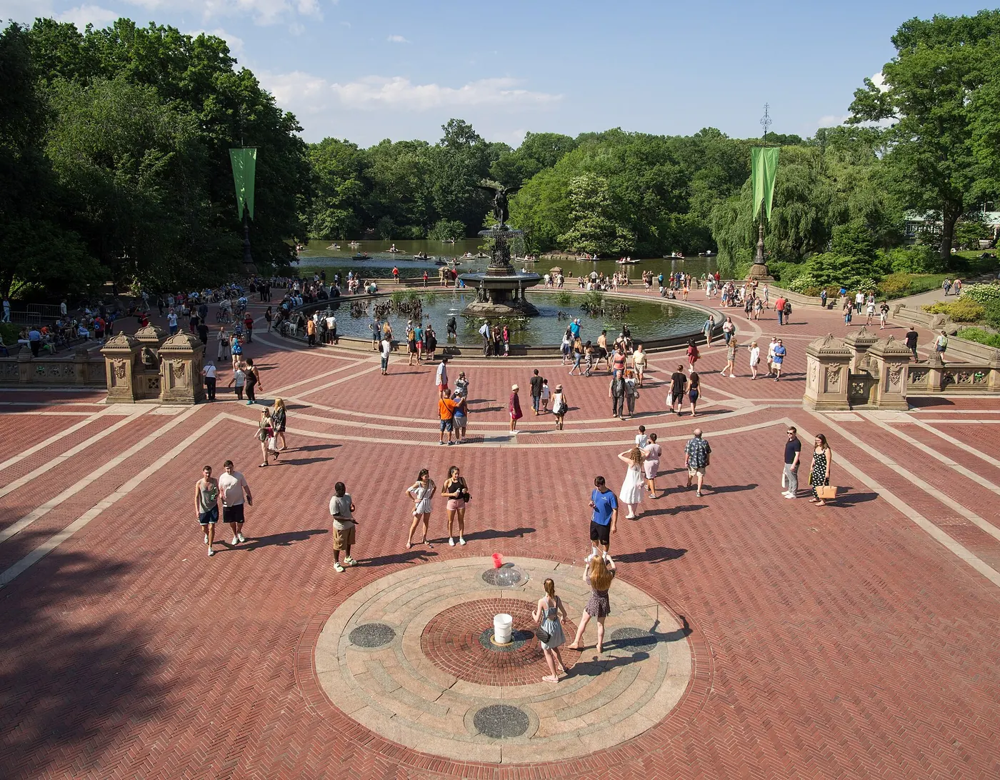

Spring in New York
Spring is the season New Yorkers forgive winter for. The park fills with blossom, the outdoor tables come back and walking is finally comfortable again — with one caveat: the first warm weekend and the Easter holidays bring some of the sharpest crowds of the year.
Checked 2 November 2026. Prices, opening hours and transport details were verified against official sources. Things change — confirm before you book. How we check.
The city thaws quickly
Cherry blossom season is the centrepiece: roughly two or three weeks in early to mid-April when the city's parks turn pink and half of New York heads out with a camera. It is short, slightly unpredictable and worth arranging a trip around.
The weather climbs fast. March averages 50°F (10°C) by day and 36°F (2°C) at night, April 63°F (17°C) and 45°F (7°C), and May 72°F (22°C) and 54°F (12°C). Rain stays constant at roughly 11 wet days a month, so an umbrella belongs in the bag from March onward. Early spring can still feel like winter in the wind; late May is often the most comfortable weather of the whole year, which is why our month guide recommends mid-April to mid-June as the best window.
Blossom timing moves with the weather, not the calendar, so check the trackers before you book anything time-sensitive. The Central Park Conservancy publishes a seasonal bloom guide at centralparknyc.org, and Brooklyn Botanic Garden — the best single place in the city for cherries — updates its blossom news at bbg.org. Easter and the school spring-break weeks also drive hotel prices and park crowds; both move each year, so check the dates rather than assuming.

Three reasons to come in spring
Blossom, mild weather and the city's running season. The first two are the reasons visitors book; the third is worth knowing about if you are here in March.
Cherry blossoms
Central Park's Cherry Hill and the Reservoir walk are the classic city spots; Brooklyn Botanic Garden has the densest collection and a cherry-blossom festival, usually in late April. Peak is early to mid-April, and it varies by year.
Easter and spring break
Easter falls in late March or April, and the school holidays around it fill hotels and the big attractions. If you want quieter parks and cheaper rooms, travel the week after Easter rather than the week before.
The NYC Half
The half marathon is usually run in March, with street closures in Manhattan and Brooklyn. The date is confirmed each year by the organiser — check the official site before planning a Sunday morning.
Planning a spring trip
Spring rewards flexibility. Pick your week around the blossom forecast and the Easter calendar, then keep one indoor option ready for the wet days.
- Aim for mid-April if blossoms are the priority. Early to mid-April is the usual peak; late April is still green and less frantic if you miss it.
- Check the organisers' bloom updates in the two weeks before you travel. Blossom peak shifts by a week or more depending on temperature and wind.
- Book hotels early for Easter and spring-break weeks, and compare the week after Easter for better rates and thinner crowds.
- Go to the parks early in the morning. Central Park and Brooklyn Botanic Garden are busiest from late morning, and weekday visits are far calmer than weekends.
- Keep a wet-weather plan: April and May both average around 11 wet days, and a museum afternoon is a better response than a cancelled day.
How locals do spring
-
01
Go early on a weekday
The first warm Saturday brings half the city to Central Park. Locals who care about seeing the blossom go on a weekday morning, often before work, and are gone by the time the crowds arrive.
-
02
Brooklyn for cherries
Brooklyn Botanic Garden is the local answer to cherry season, with a denser collection than Central Park and a festival atmosphere when the trees peak. Prospect Park next door is the calmer picnic option.
-
03
May is the real prize
Ask New Yorkers their favourite month and May comes up again and again: warm without humidity, long evenings, outdoor tables and the park at its greenest. If you can choose, choose May.

More seasonal guides
Spring runs into the best summer evenings and the long autumn walking season.


Spring questions
When do cherry blossoms bloom in New York?
Typically early to mid-April, though the peak moves with the weather and can fall anywhere from late March to late April. Central Park and Brooklyn Botanic Garden publish bloom updates, so check those in the two weeks before you travel.
Is spring a good time to visit New York?
Yes — mid-April to mid-June is one of the two best windows of the year, with mild days, blossom in the parks and comfortable walking weather. March is still cold and changeable, and Easter weeks are busy.
What is the NYC Half?
A half marathon run through Manhattan and Brooklyn, usually in March. It closes streets for part of the morning. The exact date is confirmed by the organiser each year, so check the official race site before planning around it.
What is the weather like in spring?
March averages 50°F (10°C) by day and 36°F (2°C) at night, April 63°F (17°C) and 45°F (7°C), and May 72°F (22°C) and 54°F (12°C). Expect roughly 11 wet days a month and bring layers.
When is Easter in New York?
Easter moves each year, falling in late March or April. The surrounding school holidays fill hotels and attractions, so book early if your trip coincides and confirm opening hours over the Easter weekend.